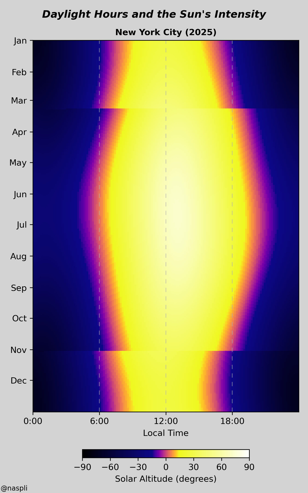
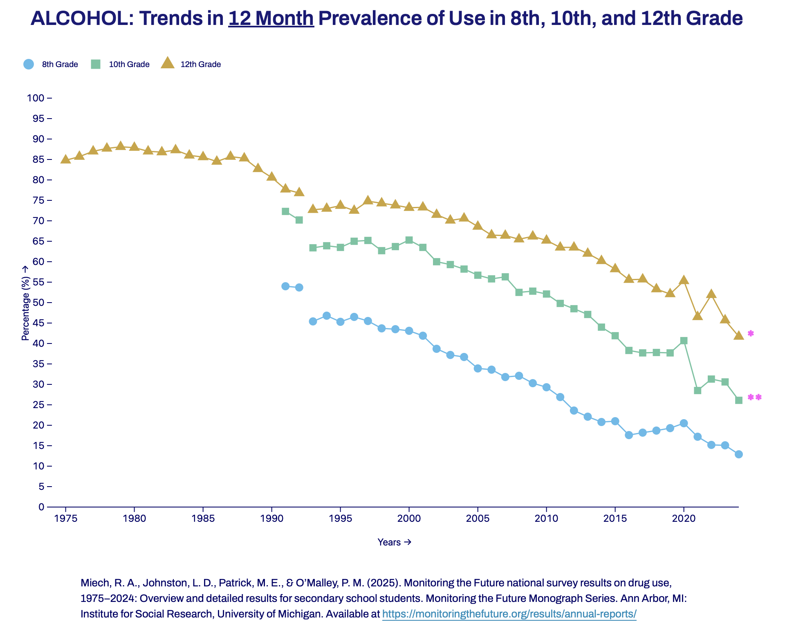
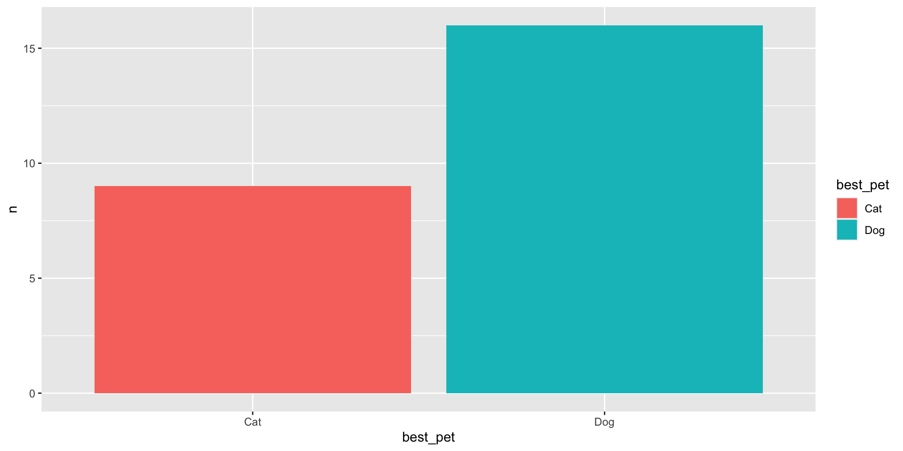

# Authenticate using Google credentials stored
# Or, easier if you're not going to share publicly:
# options(gargle_oauth_email = "my_gmail_address@gmail.com")
options(gargle_oauth_email = Sys.getenv("GMAIL_SURVEY"))
googledrive::drive_auth()
googledrive::drive_download(
"PSYCH 490.003 Exercise 3 (Responses)",
path = file.path("../include/csv", "PSYCH-490.003-Exercise-3.csv"),
type = "csv",
overwrite = TRUE
)
message("Data downloaded")Gathering & cleaning data
2025-03-25
Rick Gilmore
Prelude
In the news…
https://www.reddit.com/r/dataisbeautiful/comments/1jj2paj/oc_when_do_you_get_your_sunlight_visualising/
https://www.reddit.com/r/dataisbeautiful/comments/1jj2paj/oc_when_do_you_get_your_sunlight_visualising/
https://www.reddit.com/r/dataisbeautiful/comments/1jj2paj/oc_when_do_you_get_your_sunlight_visualising/
Monitoring the Future
“Monitoring the Future” (n.d.)
Announcements
Today’s topics
- Data processing workflows
- Gathering data
- Cleaning data
Data workflow
- Collect
- Gather
- Clean
- Visualize/plot
- Analyze
Data workflow we can script
Collect- Gather
- Clean
- Visualize/plot
- Analyze
Data workflow we can script
Collect- Gather
- Clean
- Visualize/plot
- Analyze
Workflow in practice
Gather data
- How to acquire/download
- Download manually
- Download programmatically (via code)
- How to save
- Text formats, e.g., comma-separated values (csv), best
Download manually
- Visit forms.google.com

Download manually
- Pick a form

Download manually
- Click on more options (…) menu
Download manually

Download manually
- Go to default download location (varies by computer)
- Downloads as a zip (compressed) file

Download manually
- Open compressed file
Download manually
- Move file to target location

Giphy.com
Download automatically
- Two manual steps
- Create Google Sheets file: Click on “Link to Sheets”

Download automatically

Download automatically
- Log in to Google
- Download specific URL
- Save where I decide (
include/csv) and with the name I choose (PSYCH-490.003-Exercise-3.csv)
Download automatically
[1] "assignments.csv" "PSYCH 490.003 Exercise 3.csv"
[3] "PSYCH-490.003-Exercise-3.csv" "two_sets_1_sd.csv" - The
list.files()function lists files in a specific directory
Import CSV
survey_manual <- readr::read_csv("../include/csv/PSYCH 490.003 Exercise 3.csv", show_col_types = FALSE)
dim(survey_manual)[1] 25 9- The
dim()function describes the dimensions of an R object. - A data frame has two dimensions, rows and columns.
Extract column names
[1] "Timestamp"
[2] "Favorite Icecream Flavor"
[3] "Best Pet Type"
[4] "How confident are you with your math skills? [How confident are you in your math skills?]"
[5] "How confident are you with your math skills? [How creative are you?]"
[6] "How many concerts have you gone to?"
[7] "How many credits are you taking this semester?"
[8] "What is the date of your favorite holiday?"
[9] "Comments" - The
names()function returns the names of the columns in our data frame.
Import (automatically-downloaded) CSV
Here we put all of this into the same block of code:
survey_auto <- readr::read_csv("../include/csv/PSYCH-490.003-Exercise-3.csv",
show_col_types = FALSE)
dim(survey_auto)[1] 25 9[1] "Timestamp"
[2] "Favorite Icecream Flavor"
[3] "Best Pet Type"
[4] "How confident are you with your math skills? [How confident are you in your math skills?]"
[5] "How confident are you with your math skills? [How creative are you?]"
[6] "How many concerts have you gone to?"
[7] "How many credits are you taking this semester?"
[8] "What is the date of your favorite holiday?"
[9] "Comments" Clean then visualize or vice versa?
Under the hood
- R prefers that variable names not have spaces
- When names have spaces, we have to communicate that to R
- So, we wrap
Favorite Icecream Flavorin backticks (“`”). - the
xtabs()function does cross-tabulations
Another cross-tabulation
Clean then visualize
- Rename variable names: Shorter, remove spaces
- But capture the actual questions for later
- Create a data dictionary
Renaming column names
Plotting one variable
Figure 1: Favorite ice cream flavor among PSYCH 490.003 students
Plotting another variable
Figure 2: Best pet for PSYCH 490.003 students
Why script?
- Much more reproducible (by others)
- Especially for complex sequences of tasks
- Much more robust
- Be kind to your future (forgetful) self

If I am not for myself, who will be for me?
And being for myself, what am I?
And if not now, when?
Wikipedia contributors (2025)
How script?
- Save commands in a file (
*.R) - Save commands and comments in a Quarto file (
*.qmd)- See the ‘Learning-Quarto’ assignment on posit.cloud
Resources
References
Monitoring the Future. (n.d.). Retrieved March 25, 2025, from https://monitoringthefuture.org/
Wikipedia contributors. (2025, March 10). Hillel the elder. Retrieved from https://en.wikipedia.org/wiki/Hillel_the_Elder